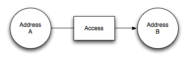
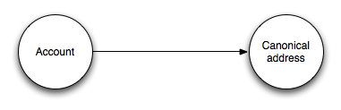
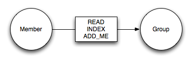
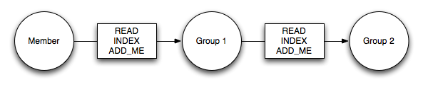
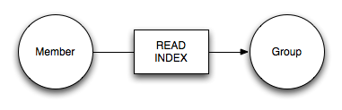
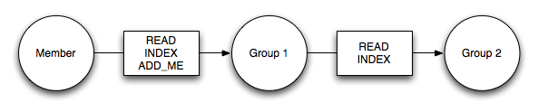
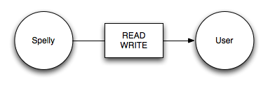

| Authors: | Jon Tirsen |
|---|---|
| Version: | 1.0 - May 2009 |
Google Wave's primary means of access control is the list of addresses that participate on a wavelet and what access accounts has to these addresses. This white paper outlines how the wave platform stores, exchanges and enforces access control.
This whitepaper is part of a series. All of the whitepapers can be found on Google Wave Federation Protocol site.
Wave access control is defined as:
Access from individuals to accounts and accounts to addresses is defined and enforced inside each wave provider and not specified in the standard. Address access is modeled as a graph where each edge in the graph grants access from one address to another address. These edges are stored in waves and are authorized by the wave provider that controls the domain of the addresses. The access edges can be exchanged between wave providers through the normal wave federation protocols.
Typically an account has access to a canonical address which is the entry point for an account into this graph, although this is wave provider specific. Operations are authorized at the source of each wave provider. If authorization spans multiple wave providers the operation needs to be sent and verified along the path of each of the involved wave providers. Different levels of access to a wavelet is still to be defined.
Each wave provider chooses how they authenticate their users. In Google Wave we use a simple username and password scheme for individuals. Robots are contacted by the Google Wave provider through a well-defined URL and are therefore authenticated that way.
Address access can be seen as a directed graph of address to address edges where each edge is restricted by access settings.
The entry point into the graph for a user or a robot is their canonical address.
There are multiple types of access which indicate what address A can do as address B.
<grant from="a@example.com" to="b@example.com" until="2009-06-14T13:31Z"> <access>INDEX</access> <access>READ</access> </grant>
An operation always contains the path of authorization from the canonical address to the address the account wants to perform an operation as excluding any initial WRITE edges. Using the information available in the access wave the client builds the path and inserts it into the operation that it sends to its wave provider. After it has optimistically applied the operation to the wave in the client it sends it to its wave provider who then signs and forwards the operation to the next wave provider in the path. Every wave provider on the path will validate and sign the operation before it is finally forwarded and applied at the wave provider that owns the wavelet. This final wave provider is responsible for verifying all the signatures.
If an authorization fails, the client has typically already optimistically applied the operation to the wave so will either need to reverse those operations or indicate an error to the user. In a well-behaved system this should only occur if an access edge has been removed or changed and this change has yet to be forwarded to the clients wave provider. In this case the access wave would access edges that are no longer valid.
Groups are implemented on top of this generic access framework. Each group has an address and members. Group membership is expressed as the following edge for each member of the group:
As you can see an important detail of groups in wave is that being a member of a group does not allow you to directly write into a wave which that group is addressed to. Instead it lets you add yourself as a direct participant to that wave.
A group can be a member of another group which looks like this:
This means that wavelets addressed to both Group 1 and Group 2 will be written into the member's index and the member can read and "write" (add self as a participant) to all these wavelets.
Read-only groups mean that the "add myself" access is lacking:
An address can be a read-write member of a nested group even though it's a read-only member of an outer group:
This means the member can become a participant of wavelets addressed to Group 1 but not to wavelets addressed to Group 2.
Delegation allows an account to perform operations with another address as the author. Google Wave currently uses this for two cases:
This last case is represented as the following edge:
This provides Google Wave infrastructure services full access to act as a user, while being authenticated as a service account.
Google Wave will eventually support some level of access control on a wavelets but requirements and implementation plans have yet to be determined. For example: